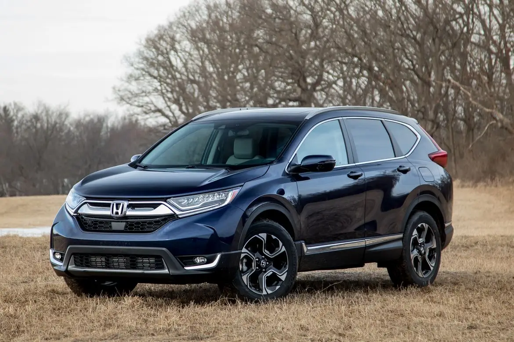
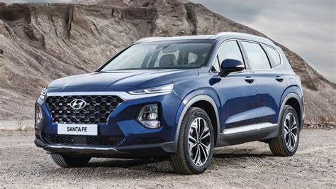
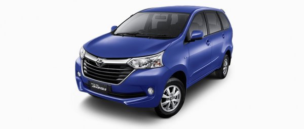
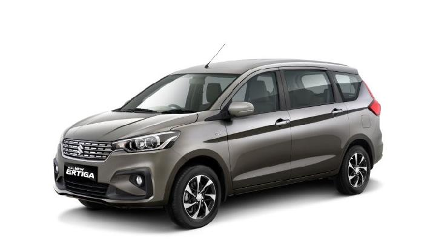

Grafik Tren Penjualan Mobil Bekas (2022–2025)
Penjualan Tertinggi per Kota
- Jakarta: 15,000 unit
- Surabaya: 10,500 unit
- Bandung: 8,200 unit
- Medan: 6,700 unit
Sorotan Jenis Mobil Terlaris
SUV
Jenis mobil paling diminati di pasar bekas.
MPV
Mobil keluarga favorit dengan ruang luas.
Sedan
Desain elegan dan efisien untuk penggunaan harian.
Cara Memilih Mobil Bekas
Memilih mobil bekas yang tepat memerlukan perhatian pada beberapa aspek penting. Berikut adalah beberapa tips yang dapat membantu Anda dalam memilih mobil bekas:
- Periksa Kondisi Mesin: Pastikan mesin dalam kondisi baik dan tidak ada suara aneh saat dinyalakan.
- Cek Riwayat Servis: Tanyakan riwayat servis dan perawatan mobil untuk memastikan mobil dirawat dengan baik.
- Periksa Fisik Mobil: Cek bodi mobil apakah ada bekas tabrakan atau karat yang dapat mempengaruhi performa.
- Test Drive: Lakukan test drive untuk merasakan kenyamanan dan performa mobil secara langsung.
- Periksa Dokumen: Pastikan dokumen kendaraan lengkap dan sesuai dengan data mobil.

“Kenaikan ini dipicu oleh meningkatnya permintaan mobil ekonomis pasca pandemi.”
Daftar Mobil Populer
-

Honda CR-V 2018
Harga rata-rata: Rp 250 juta
Tahun produksi: 2018
-

Hyundai Santafe 2020
Harga rata-rata: Rp 350 juta
Tahun produksi: 2020
-

Toyota Avanza 2017
Harga rata-rata: Rp 150 juta
Tahun produksi: 2017
-

Suzuki Ertiga 2019
Harga rata-rata: Rp 180 juta
Tahun produksi: 2019